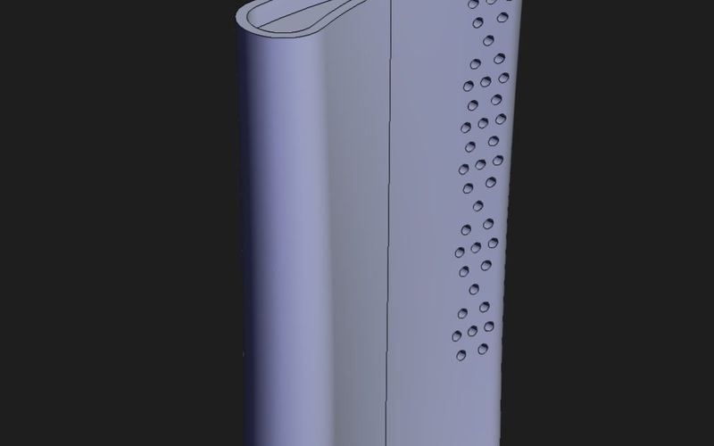
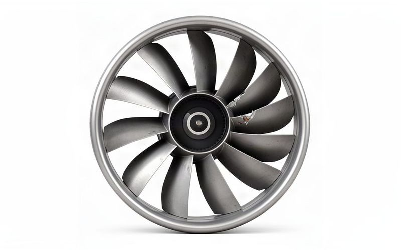
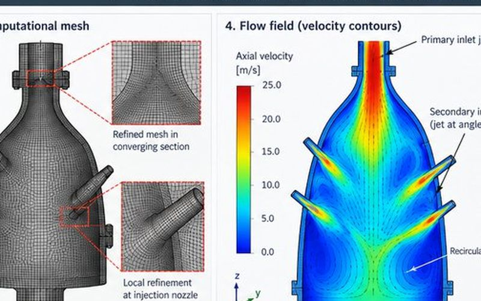
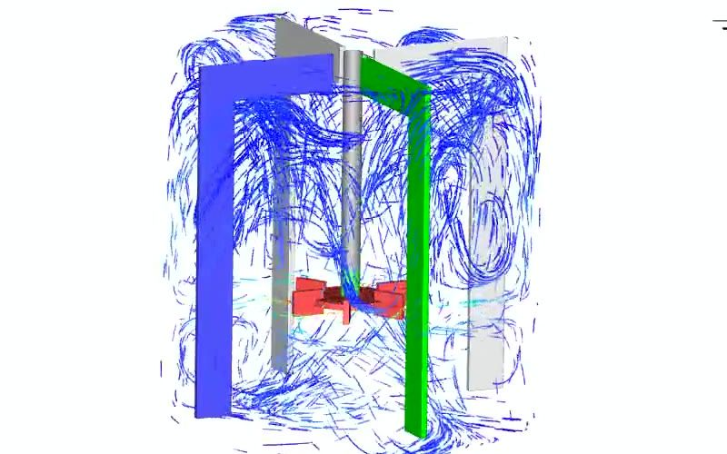
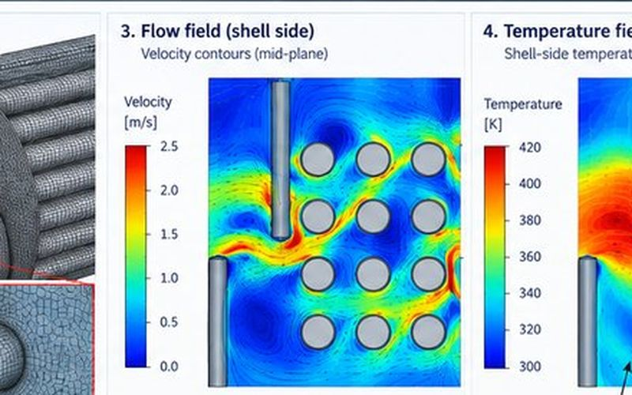
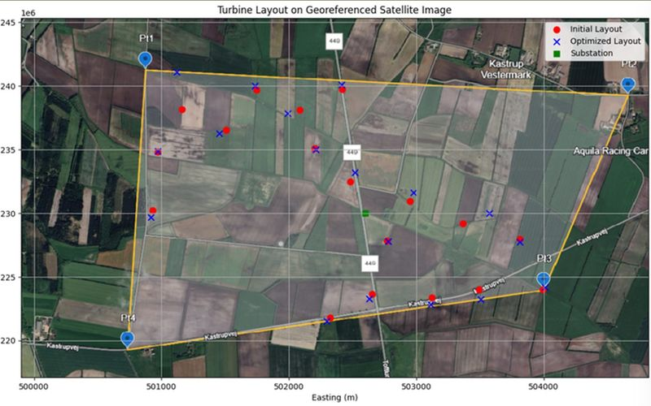
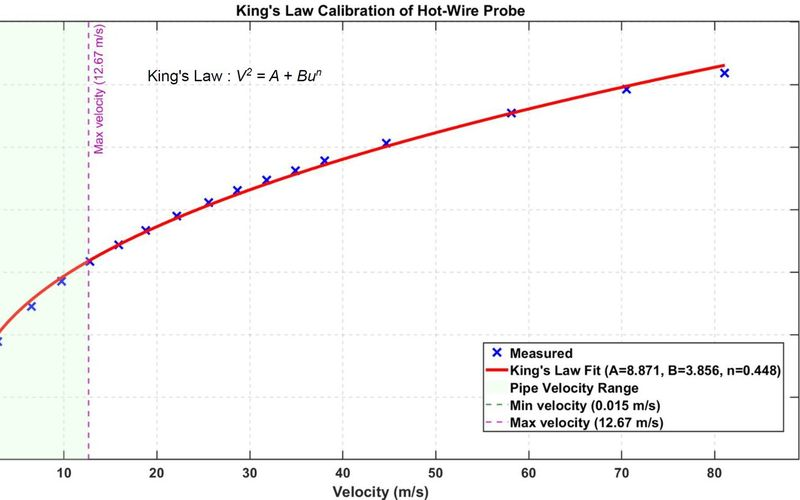
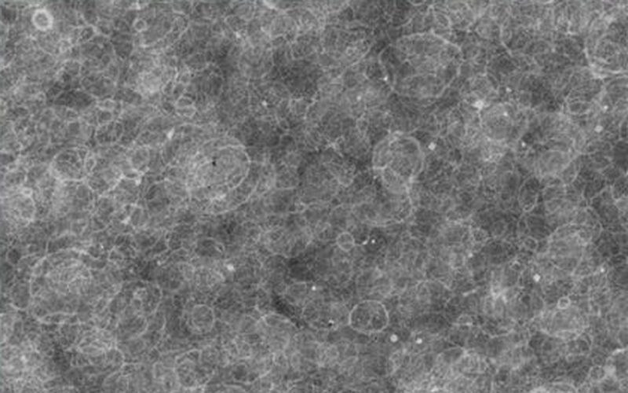

Projects
Industrial CFD from Honeywell and BARC, research and lab work at TUM, and two GPU flow solvers I am building myself. Each card opens the full case study.
No project matches that search. Clear it to see all 13.

Own GPU solver · 2026
AuraFlow — GPU SPH solver for violent free-surface flow
Weakly compressible SPH on NVIDIA Warp: dam breaks validated against Lobovsky 2014 and SPHERIC Test 2, 24.1 M particle-steps/s on a laptop GPU, differentiable, with a surrogate and RL control built on top.

Own GPU solver · 2026
Real-time hydrofoil wakes with lattice Boltzmann + FTLE
C++/CUDA/Qt desktop app: D2Q9 LES around a NACA 0012 with live Lagrangian coherent structures. Re 1000 polar matches the literature: Cd(0°) 0.125 vs 0.12, shedding from 8°, St 0.88.

Honeywell · 2019–2023
Turbomachinery CFD & automation
RANS stage simulations with mesh morphing and uncertainty quantification; Python pipelines that cut analysis time by 26% and save $33K a year.

Honeywell · 2019–2023
Cooling-passage CHT & sand-resilient redesign
Conjugate heat-transfer root-cause study of cooling-passage anomalies; repair thresholds and a sand-resilient passage redesign with verified fatigue margins.

Honeywell
Transient FOD damage thresholds
Transient simulations of fan and compressor blade damage to set repair-or-replace envelopes for maintenance criteria.

Honeywell UOP · 2021–2022
Methane dehydrogenation reactor
Reacting-flow CFD of a pressurised reactor: finite-rate kinetics coupled with turbulent transport and species conversion.

Self-directed · 2025
Stirred-tank bioreactor CFD
Euler–Euler gas–liquid CFD of a stirred tank (CFX) plus a Fluent population-balance case; a 4-input DOE and MOGA optimisation of kL, holdup and shear.

BARC Mumbai · 2018
Shell-and-tube heat exchanger optimisation
Parametric study of baffle spacing and tube pitch; about 22% higher heat transfer, checked against Kern and Dittus–Boelter correlations.

TUM course · 2025
Wind-farm wake & layout optimisation
FLORIS wake modelling with LandBOSSE balance-of-system costing, so energy yield (AEP) and cost (LCOE) drive the layout together.

Self-directed · 2026
CALPHAD Ni-superalloy screening
pycalphad pipeline with Latin-hypercube sampling, multi-objective scoring, ML surrogates and bootstrap uncertainty for Ni-base superalloy compositions.

TUM lab · grade 1.3
Pipe-flow boundary layers with hot-wire anemometry
King's-law-calibrated CTA profiles of laminar and turbulent pipe flow, friction factors against Hagen–Poiseuille and Blasius, and pressure loss across wire screens.

TUM lab · grade 1.0
Weld HAZ: Gleeble experiments + Python model
Single- and multi-cycle HAZ simulation of S355 steel on a Gleeble 3800: hardness falls from 232 to 208 HV1 with multi-cycling; a Python transformation model reproduces the trends.

TUM research internship · 2024–25
GDC thin films by spray pyrolysis
Nanostructured gadolinium-doped ceria films for solid-state electrolytes; SEM study linking deposition parameters to density and cracking.